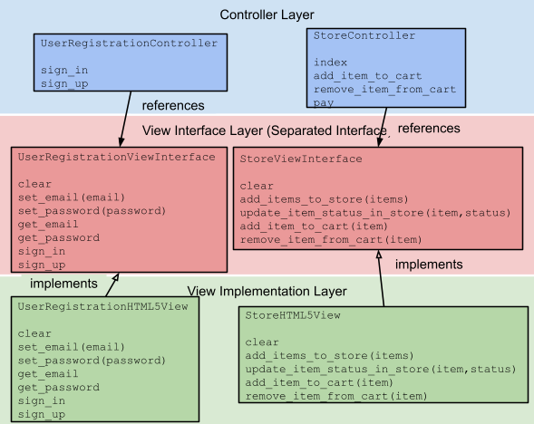

Mukeka & Tech
About
Articles
Categories
All
(42)
machine-learning
(3)
news
(1)
software-engineering
(38)
Vector Space for Documents
machine-learning
Why and how to use vector to extract information from documents
Feb 5, 2024
Humberto C Marchezi
Text Classification with Logistic Regression
machine-learning
Text classification with logistic regression
Jul 28, 2023
Humberto C Marchezi
Text Classification with Naive Baye’s
machine-learning
Improved techniques to implement Naive Bayes for text classification such as Laplacian Smoothing and Log Likelihood
May 7, 2023
Humberto C Marchezi
Welcome To My Blog
news
After a very long winter to share ideas and thought in the tech and research area, I decided to be back with a shiny and practical bloging tool.
Apr 7, 2023
Humberto C Marchezi
Express business language in your code with use cases
software-engineering
Use cases are a very important element in UML that addresses the functional aspect of a software. The use case diagram shows how the different system functionalities are…
Jan 26, 2016
Humberto C Marchezi
From static-language style API to Ruby style API
software-engineering
It has passed some time since I published a Naive_Bayes for text-classifier written in Ruby. At that time the API was designed very much influenced in way I have written a…
Jul 26, 2015
Humberto C Marchezi
Efficient Unit Test in C#.NET
software-engineering
I consider unit tests one of the most important practices in agile programming.
As the name stated, unit tests check the behaviour of the smaller part of an object what can…
Jul 16, 2015
Humberto C Marchezi
Create an Agnostic Vendor Infrastructure in Ruby
software-engineering
Depending how the code was written adding new services to it can be difficult.
For instance, let’s say we are building a rails application that gets integrated to cloud…
Jan 26, 2015
Humberto C Marchezi
Rails: New Framework - Old Design Problems
software-engineering
I have been programming for Rails for about 2-3 years now. As I came from a C# background it was a bit awkward for me to see some design principles I took as good practices…
Dec 18, 2013
Humberto C Marchezi
RORM - Ruby Domain Objects with Persistence
software-engineering
After some time using ActiveRecord and MongoId, I decided it was time to create a ruby ORM for domain objects as my first github project.
https://github.com/hcmarchezi/rorm/b…
Dec 6, 2012
Humberto C Marchezi

Separated Interface Design Pattern
software-engineering
When developing a system in many cases it is possible to identify dependencies among different layers whose responsibilities are well defined in the system.
Nov 12, 2012
Humberto C Marchezi
JavaScript: Object Oriented Programming
software-engineering
By using functions and the structures above it is possible to a function object which syntax works just like a C++/Java class. See examples below.
Aug 28, 2011
Humberto C Marchezi
Publishing ClickOnce winforms applications with command-line MSBuild
software-engineering
One of the most interesting characteristics of tools such as CCNet and Nant is the automated deploy. I found many examples of how to publish an application with…
Feb 27, 2011
Humberto C Marchezi
iPhone Development: to Objective-C or not to Objective-C ?
software-engineering
When I think of Objective-C, what comes to my mind is a niche programming language for the MacOS and Apple related products. Thus as far as I know this is the only…
Feb 27, 2011
Humberto C Marchezi
Tools and Utilities for the .NET Developer
software-engineering
Here is a list I got from the internet that might be useful (at least for a while):
Jun 3, 2010
Humberto C Marchezi
Using Fluent Builder Pattern to Configure Test Objects
software-engineering
Depending on the complexity of the domain model, configuring mock objects for specific cenarios can make the resulting test code to get messy.
May 9, 2010
Humberto C Marchezi
Test-Driven-Development Best Practices
software-engineering
I recently read a very intersting conversation in StackOverflow.com about test-driven development.
I found it very instersting and the principles can be summarized as…
May 8, 2010
Humberto C Marchezi
Name Convention for Object Oriented Apps
software-engineering
Some time ago I came across with a question about naming conventions for different parts of the software: UI, Service, Entities, etc. I decided to share some of the…
Feb 24, 2010
Humberto C Marchezi
Unit Testing Linq Queries in Moq
software-engineering
After some google research and experimentation I found that it was not worth to mock methods that return IQueryable or IQueryable because in order to use it programmers have…
Feb 22, 2010
Humberto C Marchezi
Model View Controller with Events in .NET
software-engineering
This is often a confused design pattern and its main purpose is to separate objects that assume different roles in a software.
These roles are:
Dec 26, 2009
Humberto C Marchezi
Extreme Programming Impressions
software-engineering
Whe I first read about XP Programming in 2002 ( http://www.extremeprogramming.org/ ) which is one of the agile methodologies for software development I didn’t take it…
Sep 27, 2009
Humberto C Marchezi
DynamicProxy: An Elegant Solution for Session/Transaction/Exception Management in NHibernate (or any other ORM)
software-engineering
Session management is a well solved problem for web applications and many detailed solutions can be found in the internet. The same is not true for winforms applications.…
Aug 27, 2009
Humberto C Marchezi
Avoid ‘Tall’ DAO Factories
software-engineering
A “tall” DAO factory can be defined as a big class that contains too much methods for each business class that compounds your domain model.
Aug 21, 2009
Humberto C Marchezi
Agile Modeling in Software Projects
software-engineering
Recently Jeff Sutherland mentioned another certification for software programmers since Scrum does not include software engineer techniques but very present in XP (extreme…
Jun 13, 2009
Humberto C Marchezi
How the repository pattern works ?
software-engineering
The classes that represent the elements of a domain must contain all the business logic inside it such as tax calculation, name validation, etc. However in many…
Jun 10, 2009
Humberto C Marchezi
.NET: Using Generics to avoid repetition in Domain Classes
software-engineering
In classical object oriented methodologies or new-old-ones such as Domain Driven Design, the domain layer classes have persistent methods that reference its correpondent…
Mar 14, 2009
Humberto C Marchezi
Using .NET Nullable Types with NHibernate 1.2
software-engineering
Originally, NHibernate 1.2 does not support nullable types from .NET such as
DateTime?, int?, bool?
, etc. but that can be solved by implementing specific NHibernate specific…
Mar 12, 2009
Humberto C Marchezi
Extremely Short Introduction for Ruby on Rails
software-engineering
This file contains brief descriptions of a Ruby on Rails project.
Dec 26, 2008
Humberto C Marchezi
Generating Software Documentation from Unit Tests
software-engineering
In the beginning of my career as a software developer I participated in two software projects with the traditional approach of document-first and code later. It didn’t take…
Nov 23, 2008
Humberto C Marchezi
Efficient Software Development Process with Open-Source Tools for .NET
software-engineering
When a software is been built, a series of characteristics must be pursuit in order to deliver a quality product during the development process:
Aug 19, 2008
Humberto C Marchezi
Scrum as a criteria for Venture Capital Groups
software-engineering
I just read a Foreword from Jeff Sutherland ( co-creator of Scrum ) from the book “Scrum and XP from the Trenches” where he comments how he chooses companies who really…
Jul 24, 2008
Humberto C Marchezi
5 Things You Should Remember about NHibernate
software-engineering
NHibernate is probably the most used ORM (object-relational mapping tool) for .NET applications and it is based in Hibernate the most used ORM in Java for years.
The…
Jul 18, 2008
Humberto C Marchezi
Unit Tests Rule Software Development
software-engineering
Even after a relatively long time using object oriented systems we still couldn’t deal well with a growing problem. The lack of automated tests.
Jul 18, 2008
Humberto C Marchezi
Rich Domain Objects
software-engineering
In object oriented programming, domain objects are the key of the software development. However, many programmers tend to write these classes as simple get/set storage just…
Mar 19, 2008
Humberto C Marchezi
Best Practice to Handle Exceptions
software-engineering
Modern programming languages come with try/catch/finally blocks and many times an Exception Hierarchy of classes is provided also.
Exceptions are a powerful tool that can be…
Dec 20, 2007
Humberto C Marchezi
Choosing the Right Primary Keys
software-engineering
One of the most common data modeling is the use of composite keys and natural keys as primary keys to identify tables in the database.
Composite-key tables use more than one…
Dec 3, 2007
Humberto C Marchezi
Less is More - Dynamically typed languages
software-engineering
When I was in the university I learned that strongly typed languages should be preferred since they avoid the programmers from using a certain variable in way that it was…
Oct 17, 2007
Humberto C Marchezi
Packages: A Tool to Organize Classes
software-engineering
One of these days I was taking to a work colleague about what should be the package (a.k.a. Namespace) of a certain class. Not rare there is a small debate about it. Should…
Aug 30, 2007
Humberto C Marchezi
Why developers do not like to model the Real World ?
software-engineering
Years ago the concept of roles, real world modeling, reusability and many others were not known. People with different roles were modeled in different entities ( tables or…
Jul 3, 2007
Humberto C Marchezi
My First Big Enterprise System with NHibernate
software-engineering
We just finished to deliver our first big .NET system with a 4-Layered Architecture and domain objects. The proof-of-concepts is done also for big systems.
May 9, 2007
Humberto C Marchezi
Delphi for OO Programmers
software-engineering
I just came from a presentation about Borland products.
One of the speakers were showing a piece of Delphi code to explain his idea about object oriented programming and…
Nov 9, 2006
Humberto C Marchezi
OO Paradigm Popularity
software-engineering
As far as I know OO has existed since the 70’s. For a long time, OO was mainly used for academic projects. In the meantime relational databases gained popularity between…
Oct 28, 2006
Humberto C Marchezi
No matching items